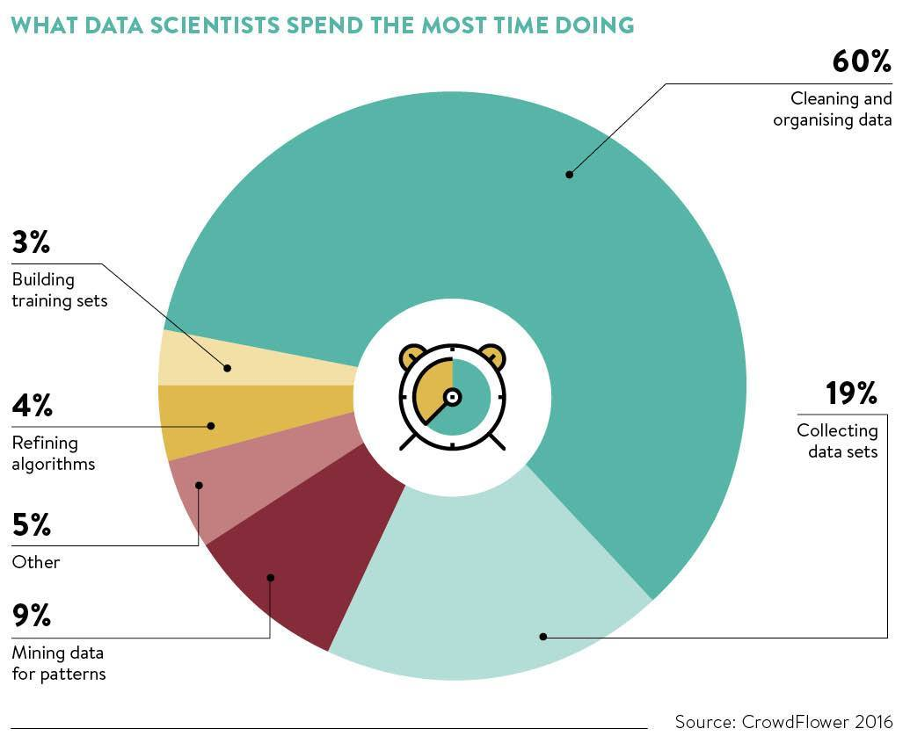

Survey of data scientists, CrowdFlower, 2016.
Sixty percent. That is not a complaint about the profession, it is a description of the job. The hour you spend this afternoon is a scale model of your next two years.
Today’s file is a season of stream chemistry from six monitoring sites, transcribed from paper field sheets by four different undergraduates. Nobody was careless. They just each made reasonable decisions, and the decisions were not the same.
Your job is to turn it into a table you would let somebody publish from.
Work in pairs, in one shared notebook, taking turns at the keyboard. Swap every time you finish a numbered task. Check .shape after every step that could remove rows, and say the new number out loud before you move on. That habit is most of what this exercise is teaching.
You have 45 minutes.
The data
https://eds-217-essential-python.github.io/data/messy_field_survey.csv| Column | What it should be |
|---|---|
site |
one of six site labels |
collection date |
the date the sample was taken |
temperature_c |
water temperature, °C |
pH |
pH, a decimal number |
dissolved_oxygen_mg_L |
dissolved oxygen, mg/L |
conductivity_uS_cm |
specific conductance, µS/cm |
n_replicates |
how many bottles were filled, a whole number |
The patterns you need
All of these are from today. You should not need anything else.
df.drop_duplicates() # and subset=[...]
df.dropna(subset=['col']) # remove rows missing a named column
df['col'] = df['col'].fillna(value) # fill the gaps instead
df['col'] = df['col'].astype(float) # int, float, str
df['col'] = df['col'].str.strip() # .lower(), .replace(old, new)
df['new'] = expression # the derived-column pattern
df['new'] = df['col'].apply(my_func) # run your own function down a columnSetup
Create a notebook named Colab_4D_Cleaning_Messy_Data.ipynb, with both partners’ names in the title cell, then read the file in.
Part 1: Find out what is wrong (about 10 minutes)
Do not fix anything yet. Diagnose first, and write what you find in a markdown cell as you go.
How many rows and columns? Run
.head()and.info(). Which columns came in asobjectwhen you expected a number, and which came in asfloat64when you expected a whole number?Run
.isnull().sum(). Which four columns have gaps, and how many each?Run
.duplicated().sum(). How many rows are exact copies of an earlier row?Run
survey['site'].value_counts(). There are six sites. How many distinct labels does the file contain? Look carefully at the quotation marks in the output ofsurvey['site'].unique().Run
.describe()ontemperature_c. The minimum is not a temperature any stream has ever had. What do you think it means?
Dataloggers that fail often write a value chosen to be obviously impossible rather than leaving the field blank. -999, -9999 and NA are the usual ones. It is missing data wearing a costume, and .isnull() will never find it. Only .describe() and your own knowledge of the measurement will.
Part 2: Clean it (about 20 minutes)
Work in the order below and check .shape after each step.
Remove the exact duplicate rows. How many rows are left?
Fix the
sitecolumn so that all six sites have one label each. You will need three separate statements, one per method, each assigned back tosurvey['site']: strip the whitespace, lower-case the text, and replace the hyphens with underscores. Confirm with.value_counts()that you have exactly six.
Write one method per line. There is a version of this that runs them all together on one line, and there is a version of that version which contains a silent bug, and telling them apart is harder than typing three lines.
pHcame in as text. Find out why by looking atsurvey['pH'].unique(), then fix it with one.str.replace()and one.astype(), in that order. Confirm the dtype isfloat64and that.describe()gives a plausible pH range.
🐍 Try survey['pH'].astype(float) before the replace, on purpose, and read the error. It names the exact value it could not parse. That message is the fastest debugging tool in pandas, and it is worth having seen once when nothing is at stake.
Three measurement columns have blanks:
temperature_c,dissolved_oxygen_mg_L, andconductivity_uS_cm. A row with no measurement is no use to you, so drop those rows in a single.dropna()call with a list insubset=. How many rows did that cost?n_replicatesalso has blanks, but here a blank means the field sheet recorded a single bottle and nobody bothered to write “1”. Fill those with1instead of dropping the rows, then convert the column toint. Confirm with.value_counts().Now deal with the impossible temperatures. Use the filter pattern from Day 3 to keep only the rows where
temperature_cis above-100, and end the line with.copy(). How many rows did the loggers ruin?Re-run
.describe()ontemperature_c. Compare the mean to the one you got in task 5. In a markdown cell, write one sentence about what nine bad rows did to the average of three hundred good ones.Rename
collection datetocollection_date, so you can reach it without quoting trouble later..rename()is from Day 2; it takescolumns=and a dictionary.
Part 3: Transform it (about 10 minutes)
Add a column called
conductivity_mS_cmholding conductivity in millisiemens per centimetre, which is the microsiemens value divided by 1000.Add a column called
temperature_fholding the temperature in Fahrenheit. Do it twice: once with the derived-column pattern and plain arithmetic, and once by writing a functioncelsius_to_fahrenheitand using.apply(). Check that the two columns agree.Write a function called
classify_phthat takes a pH value and returns'acidic'below 6.5,'alkaline'above 7.5, and'neutral'in between. Apply it to thepHcolumn, store the result in a column calledph_class, and report the counts.
Part 4: Ask it something (about 5 minutes)
You now have a table you can trust. Use it.
Use the filter pattern to build a table of just the acidic samples. Which sites do they come from? Use
.value_counts()onsite.Two of the six sites account for nearly all the acidic samples. Filter to one of those sites and to
site_d, and compare the mean ofdissolved_oxygen_mg_Lfor each. (Two filters, two.mean()calls. Tomorrow you will learn to do all six at once.)In a markdown cell of three or four sentences: what would you tell the person who collected this data? Name the single change to their field sheet that would have saved you the most time this afternoon, and say what evidence in the file makes you pick that one.
Wrap-up
Before you close the notebook, check that:
- your notebook records the row count after every step that removed rows
- you can say how many rows the original file had, how many you finished with, and where the difference went
- every cleaning decision has a markdown sentence next to it saying why, not just what
We will hear two or three pairs on question 19.
Go back to task 11. You filtered the sentinel temperatures out. Would you get the same final table if you had done that step first, before the .dropna() in task 9? Work out the answer by reasoning about the two masks, then test it. Say in a markdown cell whether the order of cleaning steps matters here, and whether you would expect that to be true in general.